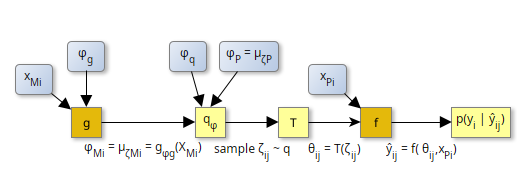

Theory
Setup of the Problem
The hybrid variational inferecne, HVI, infers a parametric approximations of the posterior density, $q(\theta|y)$, by comparing model outputs to uncertain observations, $y$. At the same time, the machine learning model, $g$, is fitted, which predicts a subset, $\phi_M$ of the parameters of the approximation $q$. In the case where it predicts the marginal means of process-model's parameters, $\theta$, this corresponds to the same machine learning model, $g$, as in parameter learning without consideration of uncertainty.
HVI approximates the posterior distribution of process-model parameters as a transformation of a multivariate normally distributed variable $\zeta$: $q(\theta) = T(q(\zeta))$, $q(\zeta) \sim \mathcal{N}(\mu, \Sigma)$. This allows for efficient sampling, ensures a finite nonzero probability across the entire real space, and, at the same, time provides sufficient flexibility.

The optimized parameters, $\phi = (\phi_g, \phi_P, \phi_q)$ are the same for each site. This allows to apply minibatching, which does not require predicting the full observation vector, $y$, during parameter fitting.
In order to learn $\phi_g$, the user needs to provide a batch of $i \in \{1 \ldots n_{b}\}$ observation $y_i$, their uncertinaty, $y_{unc,i}$, covariates $x_{Mi}$ and drivers $x_{Pi}$ in each iteration of the optimization. Moreover, for each $i$, HVI needs to draw $n_{MC}$ samples parameters $\zeta_i$, transforms and runs the model to compute a prediction for $y_i$ and computes $\log p(y_i)$ to estimate the expected value occurring in the ELBO (see next section).
Estimation using the ELBO
In order to find the parameters of the approximation of the posterior, HVI minimizes the KL divergence between the approximation and the true posterior. This is achieve by maximizing the evidence lower bound (ELBO).
\[\mathcal{L}(\phi) = \mathbb{E}_{q(\theta)} \left[\log p(y,\theta) \right] - \mathbb{E}_{q(\theta)} \left[\log q(\theta) \right]\]
The second term is the entropy of the approximating distribution, which has a closed form for a multivariate normal distribution. The expectation of the first term can be estimated using Monte-Carlo integration. When combined with stochastic gradient descent, this needs only a small number of samples. However, HVI needs to compute the gradient of this expectation of the joint posterior density of observations and parameter, $\log p(y,\theta) = \log p(y|\theta) + \log p(\theta)$, by automatic differentiation. Hence, HVI needs to differentiate the process-model, $f$, that is run during computation of the Likelihood of the data, $p(y|\theta)$.
Parameter transformations
HVI prescribes $q(\theta)$ to be the distribution of a transformed random variable, $\theta = T^{-1}(\zeta)$, where $\zeta = T(\theta)$ has a multivariate Normal distribution (MVN) in unconstrained $\mathbb{R}^n$. The transformation, $T$, provides more flexibility to model the posterior and takes care of the case where the support of $q(\theta)$ is smaller than $\mathbb{R}^n$, the support of the MVN. For example if the the log of $\theta$ is normally distributed, then $\theta$ has LogNormal distribution, and $\theta = T^{-1}(\zeta) \equiv e^{\zeta}$. The transformed joint density then is
\[p_\zeta(y,\zeta) = p(x, T^{-1}(\zeta)) \, \left| det J_{T^{-1}}(\zeta)\right|,\]
where $\left| det J_{T^{-1}}(\zeta)\right|$ denotes the absolute value of the determinant of the Jacobian of the inverse of transformation, $T$ evaluated at $\zeta$.
With those assumptions, the ELBO becomes
\[\mathcal{L}(\phi) = \mathbb{E}_{q(\zeta)} \left[ \log p(y, T^{-1}(\zeta)) + \log \left| det J_{T^{-1}}(\zeta)\right| \right] + \mathbb{H}_{q(\zeta)},\]
where $\mathbb{H}_{q(\zeta)}$ is the entropy of the approximating density and the expectation is across a normally distributed random variable, $\zeta$.
Covariance structure
HVI assumes that transforms of the latent variable follow a multivariate normal distribution: $\zeta = T((\theta_P, \theta_M)) = (\zeta_P, \zeta_M) \sim \mathcal{N}(\mu(\phi_g), \Sigma)$. The covariance matrix can be decomposed into standard deviation and the correlation matrix.
\[\Sigma = diag(\sigma_\zeta) C_\zeta \, diag(\sigma_\zeta),\]
where $\sigma_\zeta$ is the vector of standard deviations, and $C$ is the correlation matrix. HVI further assumes that uncertainties of site parameters, $\zeta_{M1}, \zeta_{M2}, \ldots$, differ only by their standard deviation, i.e. that the parameter correlations is the same and independent of other sites. With the additional assumption of $\zeta_{Ms}$ being independent of $\zeta_P$, the covariance matrix has a block-diagonal structure with one block for $\zeta_P$ and $n_{site}$ repetitions of a block for $\zeta_{M}$. By definition of a correlation matrix, all the main diagonal elements are 1. E.g. for 2 elements in $\zeta_{P}$ and 3 enlements in $\zeta_{M}$ this results in:
\[\begin{pmatrix} \begin{matrix} 1 & \rho_{Pab} \\ \rho_{Pab} & 1 \end{matrix} & 0 & 0 & \cdots\\ 0 & \begin{matrix} 1 & \rho_{Mab} & \rho_{Mac} \\ \rho_{Mab} & 1 & \rho_{Mbc} \\ \rho_{Mac} & \rho_{Mbc} & 1 \end{matrix} & 0 \\ 0 & 0 & \begin{matrix} 1 & \rho_{Mab} & \rho_{Mac} \\ \rho_{Mab} & 1 & \rho_{Mbc} \\ \rho_{Mac} & \rho_{Mbc} & 1 \end{matrix} \\ \cdots & & & \ddots \end{pmatrix}\]
In order to draw random numbers from such a normal distribution, the Cholesky decomposition of the covariance matrix is required: $\Sigma = U_{\Sigma}^T U_{\Sigma} = diag(\sigma_\zeta)^T U_C^T U_C \, diag(\sigma_\zeta)$, where $U_{\Sigma}$ and $U_C$ are the cholesky factors of the covariance and correlation matrices respectively. They are upper triangular matrices.
Since, the block-diagonal structure of the correlation matrix carries over to the cholesky factor, $U_C$ is a block-diagonal matrix of smaller cholesky factors. If HVI modeled the depence between $\zeta_{Ms}$ and $\zeta_P$, the correlation matrhix would have an additional block repeated in the first row and its transpose repeated in the first column in $\Sigma$, leading to a cholesky factor $U_C$ having entries in all the rows.
HVI allows to accoung for correlations among those parameters by providing the values of the global parameters to the machine learning model, $g$ in addition to the covariates.
\[ p(\zeta_{Ms}, \zeta_P) = p(\zeta_{Ms} | \zeta_P) p(\zeta_P)\]
Since the differentiation through a general cholesky-decomposition is problematic, HVI directly parameterizes the Cholesky factor of the correlation matrix rather than the correlation matrix itself. For details see the Wutzler in prep.
Combining variational inference (VI) with hybrid models
Traditional VI estimates all means and uncertainties of the parameters $(\zeta_P, \zeta_{M1}, \ldots, \zeta_{Mn} )$ by inverting the model given the observations and its uncertainty. HVI, directly inverts only the means of $\zeta_P$ and predicts the means, $\mu_{\zeta_{Ms}}$ of the covariate-dependent parameters by the machine learning model $q(X_M, \zeta_P; \phi_q)$. If there is enough information in the observations, the ML model could predict additional parameters of the posterior distribution based on covariates, such as diagonals of the covariance matrix.
Currently, HVI assumes $\zeta_{Ms} \sim \mathcal{N}(\mu_{\zeta_{Ms}}, \Sigma(\mu_{\zeta_{Ms}}))$ is normally distributed with the covariance matrix $\Sigma$ being only dependent on the magnitude of $\mu_{\zeta_{Ms}}$, i.e. conditionally independent of covariates, $X_M$ (see details on $\mu_{\zeta_{Ms}}$).
In the specific setting, the parameter vector to be opmized, $\phi = (\phi_P, \phi_g, \phi_u)$, comprises
- $\phi_P = \mu_{\zeta_P}$: the means of the distributions of the transformed global parameters,
- $\phi_g$: the parameters of the machine learning model, and
- $\phi_u$: parameterization of $\Sigma_\zeta$ that is additional to the means.
Details
Specifically, $\phi_u= (log\sigma^2_P, log\sigma^2_{M0}, log\sigma^2_{M\eta}, a_P, a_M)$, where the variance of $\zeta_P$ is $\sigma^2_P$, the variance of the $i^{th}$ entry of $\zeta_{M}$ scales with its magnitude: $\log \sigma^2_{Mi} = log\sigma^2_{M0i} + log\sigma^2_{M\eta i} \, \mu_{\zeta_{Mi}}$, and $a_P$ and $a_M$ are parameter vectors of the blocks of the correlation matrix.
In order to account for correlations between global and site-specific parameters, HVI models $p(\zeta)$ as a multivariate normal distribution that is a shifted zero-zentered multivariate normal, $p(\zeta_r)$.
\[\zeta = (\zeta_P, \zeta_{Ms}) = \zeta_r + (\mu_{\zeta_P}, \mu_{\zeta_{Ms}}) \\ \zeta_r = (\zeta_{rP}, \zeta_{rMs}) \sim \mathcal{N}(0, diag(\sigma_\zeta)^T C_\zeta \, diag(\sigma_\zeta)) \\ \mu_{\zeta_{Ms}} = g_s(X_M, \zeta_P; \phi_g) \\ diag(\sigma_\zeta) = e^{(\log\sigma^2_P, \log\sigma^2_{M})/2} \\ C_\zeta = U^T U \\ U = \operatorname{BlockDiag}(a_P, a_M)\]
where the predicted value of $\mu_{\zeta_{Ms}}$ may depend on the random draw value of $\zeta_P = \zeta_{r,P} + \mu_{\zeta_P}$. By this construction HVI better supports the assumption that $\zeta_{rM}$ is conditionally independent of $\zeta_{rP}$, which is required to macke the cholesky-factor, $U$ of the covariance matrix block-diagonal.
The above procedure makes an additional subtle approximation. HVI allows the variance of $\zeta_{M}$ to scale with its magnitude. In the computation of the correlation matrix, however, HVI uses the mean, $\mu_{\zeta_{Mi}}$, rather than the actual sampled value, $\zeta_{Mi}$. If it used the actual value, then the distribution of $\zeta$ would need to be described as a general distribution, $p(\zeta) = p(\zeta_{Ms}|\zeta_P) \, p(\zeta_P)$, that would not be normal any more, and HVI could not compute the expectation by drawing centered normla random numbers.
Implementation of the cost function
In practical terms the cost function
- generates normally distributed random values $(\zeta_{rP}, \zeta_{rMs})$ based on the cholesky factor of the covariance matrix, which depends on optimized parameters $(a_P, a_M)$
- generates a sample of $\zeta_P$ by adding optimized parameters $\mu_{\zeta_P}$ to $\zeta_{rP}$
- computes expected value of $\mu_{\zeta_{Ms}}$ using the machine learning model given covariates, $X_M$, given $\zeta_P$, and given optimized parameters $\phi_g$.
- generates a sample of $\zeta_{Ms}$ by adding the computed $\mu_{\zeta_{Ms}}$ to $\zeta_{rMs}$
- transforms $(\zeta_{P}, \zeta_{Ms})$ to the original scale to get a sample of model parameters $(\theta_{rP}, \theta_{rMs})$
- computes negative Log-density of observations for each sample using the physical model, $f$, and subtract the absolute determinant of the transformation, evaluated at the sample.
- approximates the expected value of the former by taking the mean across the samples
- subtract the entropy of the normal distribution approximator
The automatic differentiation through this cost function including calls to $g$, T, and $f$ allows to estimate parameters, $\phi$, by a stochastic gradient decent method.